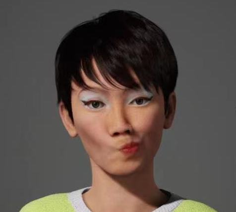

Talk that Talk
We have invited Yinan Song, a Graphic and UI deisgner based in Chengdu, China, to talk about her point of view towards emoji design. After graduation from Royal College of Arts in London, UK, Yinan has begun her practice in fields include web design and development, installation and branding.

Q1: A noticeable fact about some emojis is that there has been a potential shifting from the original meanings when initially designed to what people understand now. What is your point of view about this?
Naturally, the meanings of all languages can shift according to contexts; and “contexts” could mean different periods, different locations, or different givers/receivers.
But potentially we are discussing two different issues here:
Like other text-based languages, emojis have extended meanings or metaphorical meanings. Instead of the original meanings, the users may choose their extended, metaphorical, or context-based meanings.
Q2: What do you think causes the misunderstanding?
The emoji designers intend them to mean certain things, but more often than not the users use/interpret them differently. This could happen because the designers have neglected certain specific characteristics of these emojis (for example, the specific angles, shapes, thicknesses of the line, or/land colors choices of these emojis, etc.). So, rather than take/use the intended meanings, the users may put emphases on these supposedly “trivial” elements and prefer these subtle indicators as some kind of coded language to convey subtle feelings.
For both issues, this opaque “encoding” and “decoding” process for emoji is exactly why the users choose to use these iconographic emojis, as opposed to explicit text-based languages, in the first place.
Q3: Some other countries and regions have their own version of Emojis, and some expressions are different for the same meaning. Do you reckon culture is playing a big role in shaping the presentation of the emoji?
Yes, I think cultures play a big role. There can be extra emojis that are specific to cultures. Usually, different sets of emojis can have a similar subset of emojis and then new add-ons. However, I’d argue that the differences between different cultures are more time-related. For example, the WeChat emojis - although they were upgraded recently - generally invoke an old-school feel for Westerners. The differences are sometimes both geography-related and time-related.
Q4: Do you think that emojis will be a universal language? How would you rate its universal applicability, from 0 - 10?
Emojis are a bit more understandable than text-based languages, but I wouldn’t call it ‘universal’. I’d give it 6: most of the time, you could basically understand the meaning, especially if the senders use them literally. However, for “advanced understanding”, no: you really have to understand the cultural contexts to know if the senders are being sincere and not being sarcastic.
Q5: What tone of voice do you think that emojis are trying to convey? And is that the way you feel when you are interacting with emojis?
Emoji are trying to convey a sense of comical or exaggerated feeling. Yes, pretty much so.
Q6: Do you think it is suggested that the people who use emojis in the conversation demonstrate a particular kind of personality trait or their communication behaviors?
Yes, definitely so. How people use emojis reflects their personalities. However, there can be a discrepancy between people’s texting behavior and communication style, just as someone’s speaking style can be dramatically different from her/his writing voice.
Q7: It is said that people tend to use more specific and vivid emojis when texting friends than those with distant relationships. Do you think emojis have improved the quality of virtual communication?
Yes, I think I tend to use more emojis with people that I’m more familiar with. Sometimes, I send them to people that I barely know as well, when I don’t know what to text to them!
Q8: What kind of tendencies that you haven noticed from the evolution of emojis? And what’s your opinion about them?
As the pictures of emoji evolution suggest, the emojis are becoming more refined: from the simple, tens-of-pixel, and no-color/few-color to complex, thousands-of-pixel, and multi-color/gradient-color ones. The number of emojis is also growing, so their meanings become more nuanced.
I attribute the increasing details to the development of technology, from the screen resolution to the speed of the Internet. However, I believe that there is an end to this tendency because if it becomes too specific, emojis lose their meaning as iconographs.
Q9: As a millennial cultural symbol, emojis remained closely related to the environment of the Internet. How does emoji impact our way of thinking and expressing?
I think emojis have really bloomed thanks to the Internet. They have evolved to countless custom-made sticker collections, which are beautiful. Because among these collections, it’s amazing to find certain specific but common human experiences, which are shared by large number of people.